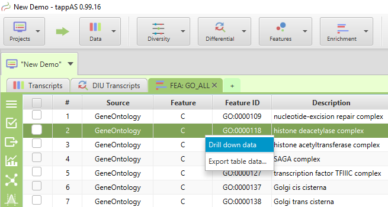
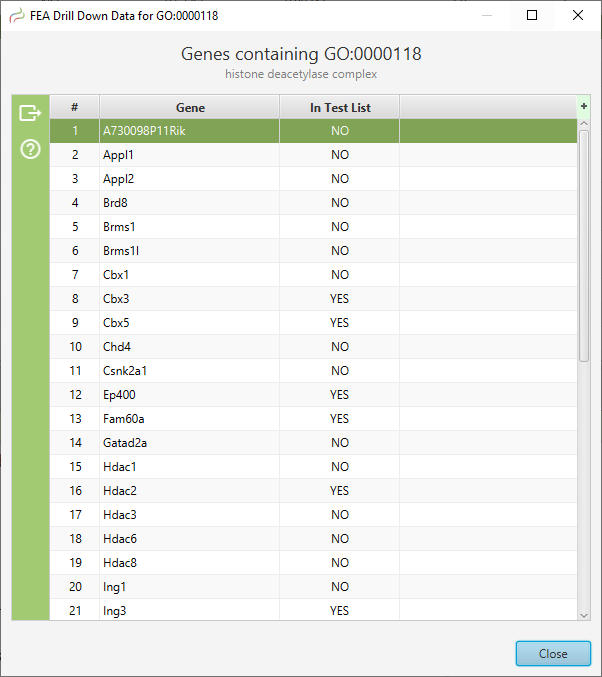

| Introduction |
<
|
>
|
Hide Contents >>
|
The ability to see the underlying data details can be extremely helpful and is provided, where relevant, via context-sensitive menus. As previously discussed in the Context-Sensitive Menus section, the data table row that you right-click on will determine the contents of the drill down data. For example, in the FEA results for Gene Ontology features window, shown below, the context menu provides a selection to drill down data.

Drill Down Data Menu Selection
Drill Down Data Menu Selection
Once selected, the drill down data window will be displayed, see image below. Note the drill down data is for "GO:0005694" which is the selected table row. You may export the drill down table data and, for this specific example, view gene data visualization for specific genes via context menu.

Drill Down Data Window
Drill Down Data Window